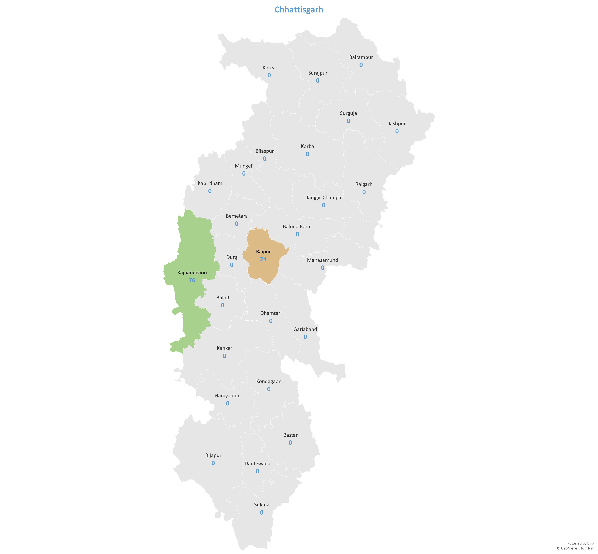
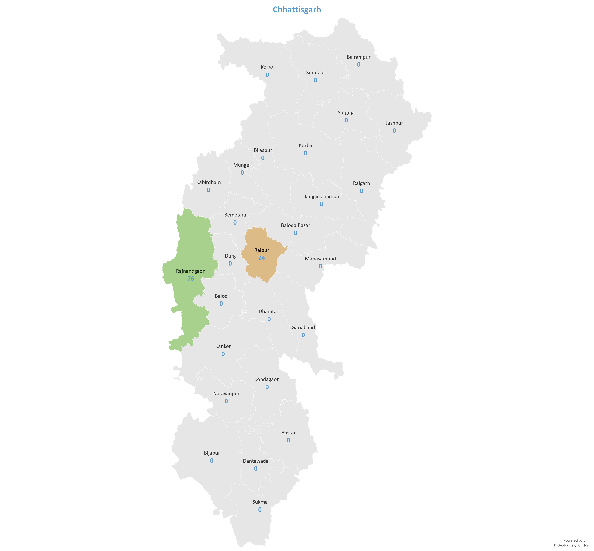

Pharmaceutical Secondary Sales Analysis
Project Overview
This project was designed to enhance direct sales processes between Stockists/Distributors and Retailers. By employing advanced analytical methods and automated data transfer mechanisms, the project aimed to provide near real-time insights into sales patterns and market dynamics at both state and district levels.
Key Features
- Analytical Methods
- Graphical and Tabular Data Analysis: The project utilized various analytical methods, including graphical and tabular representations, to identify sales patterns.
- Granular Analysis: Filters by product group and employee hierarchy allowed for detailed analysis, with further segmentation into individual product SKUs and employee roles.
Automated Data Transfer - Near Real-Time Access: Leveraging automated data transfer mechanisms ensured near real-time access to updated sales data. This facilitated agile decision-making and strategy development.
- State and District Analysis
- State Maps: The project examined the company’s active states, further dissected into districts. Options included viewing sales data for the current financial year and population data according to the 2011 Census.
- Active States: The project covered five states: Madhya Pradesh, Uttar Pradesh, Maharashtra, Rajasthan, Chhattisgarh, and Uttarakhand.
- Navigation: Users could navigate to any of these states via the dashboard.


 
